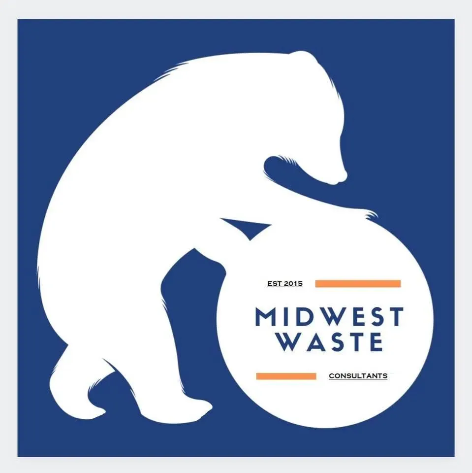
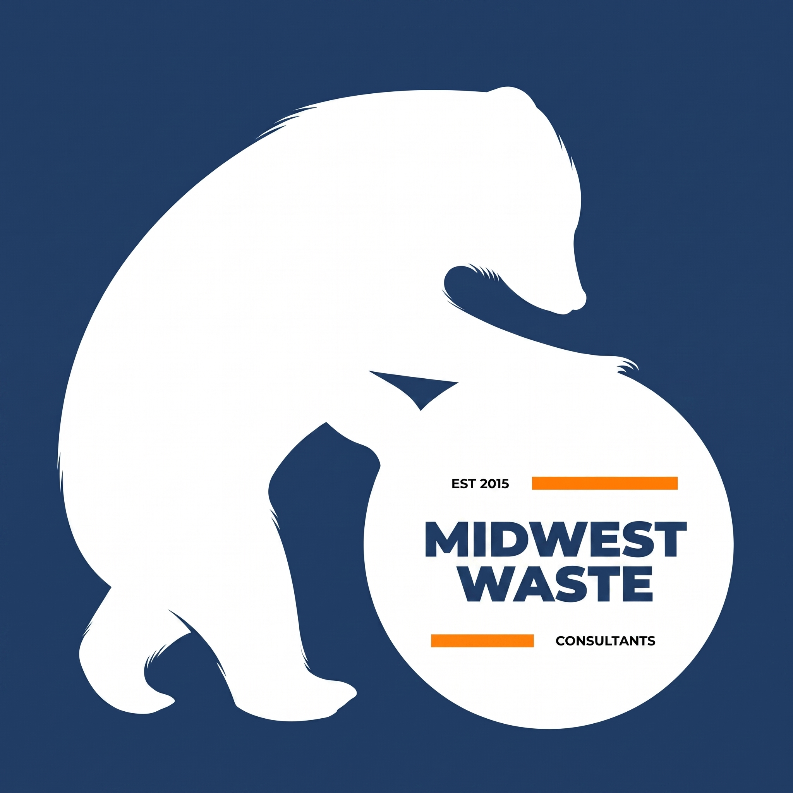
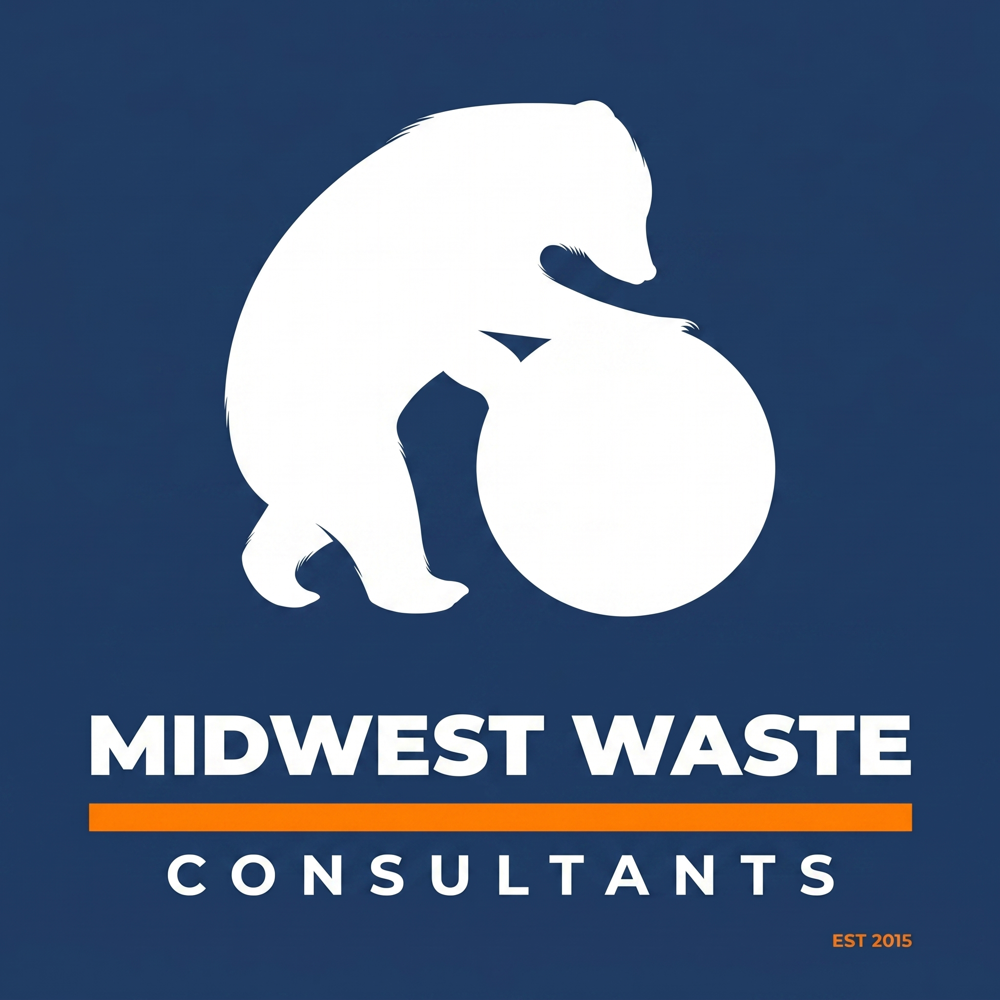
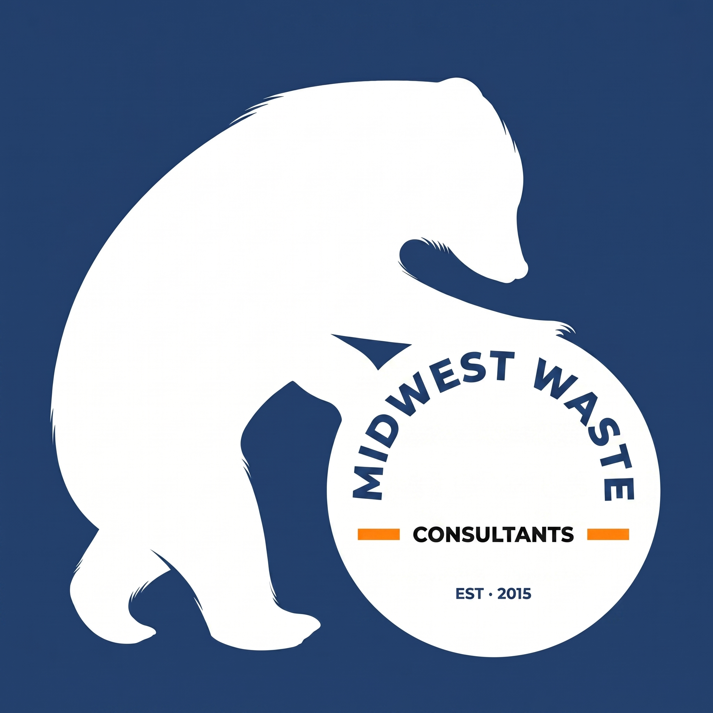
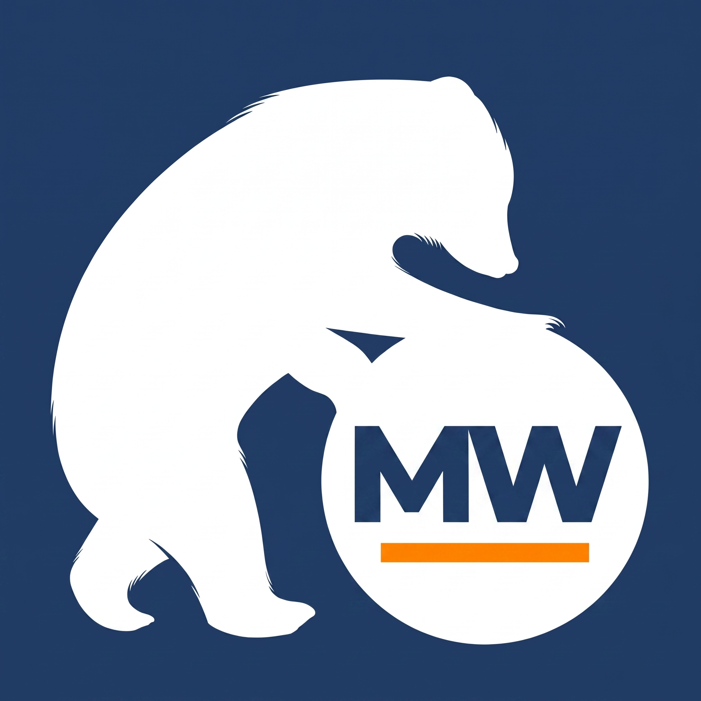

A unified standard for how the Midwest Waste brand looks, sounds, and behaves across vehicle wraps, the dual-use web platform, and every digital surface in between. Built around the existing "Bear and Sphere" equity, optimized for legibility at any scale.

The bear pushing a sphere is more than a logo — it is a working metaphor for the strength, persistence, and momentum required in waste management. The mark already lives on every truck in the fleet; that recognition is the single most valuable visual asset Midwest Waste owns. This guide preserves it on physical assets while introducing digital-first variations that perform at small sizes, in horizontal lockups, and inside circular social crops.
The bear conveys force and reliability — the muscle behind hands-on hauling and 30 years of operational expertise.
The pushing motion separates Midwest Waste from static, "industrial-only" competitor marks. We move things forward.
High-contrast navy and white read as professional and dependable — the visual equivalent of "speak to an owner."
Two anchor colors do the heavy lifting. Navy carries trust and authority. Orange carries action — reserved for calls-to-action, accent rules, and highlight moments. White and Steel Gray are the breathing room.
A two-font system: a geometric sans-serif that mirrors the circular logo for headers and a friendly humanist sans for long-form reading. Both render cleanly on screens of every size.
The original mark stays on the trucks — it is the brand equity. These four digital-first variations solve the legibility, scaling, and aspect-ratio problems that surface online without disturbing the soul of the logo. SVG renderings below illustrate the structural direction for each concept.

A direct refinement of the existing layout. Heavier sans-serif throughout, thicker orange bars, beefier "EST 2015" and "CONSULTANTS." Identical composition — just everything tightened so it survives at small print and web header sizes.

Icon and type are separated into a clean lockup. The wordmark scales up dramatically because it is no longer trapped inside the sphere. A single bold orange rule replaces the two thin bars. "EST 2015" becomes a small detail outside the mark.

"MIDWEST WASTE" curves along the top arc of the sphere, as if printed on the surface being pushed. The motion of the bear becomes the motion of the name. CONSULTANTS sits centered with two short orange bars framing it, EST 2015 as a clean detail below.

Strip everything. The bear silhouette and sphere remain — inside the sphere, only a powerful "MW" monogram and a single orange accent bar. No "EST 2015," no "CONSULTANTS." A power mark built to remain distinct at 16×16 pixels.
Three rules cover most situations. When in doubt, give the mark more room and pick the variation built for the surface.
Maintain padding equal to the width of the bear's head on every side. Nothing — text, photo edges, other logos — enters that zone.
Primary mark: 120 px wide minimum on screen, 1 inch in print. Below that, switch to the Stacked or Monogram variation.
Always place the mark on a solid color container. If the background is a photograph, drop a navy or white block behind the logo first.
Don't stretch, skew, or rotate the mark. Scale proportionally only.
Don't recolor the bear. The bear is white on navy — never orange, never gradient.
Don't add drop shadows, glows, or 3D effects. The silhouette does the work.
Don't place the mark on busy photos without a solid color container behind it.
Don't recreate the type yourself. Use the supplied SVG files only.
Don't use the primary mark below the minimum size. Switch to the Monogram instead.
Midwest Waste does not sound like a tech startup or a national hauler. We sound like an owner who has been doing this for thirty years and is happy to pick up the phone.
Example — "Need a dumpster this weekend? Call us. We'll size it right and have it on your driveway by Friday."
Avoid — "Leveraging end-to-end synergistic waste intelligence solutions to optimize your sustainability journey."
Four small moves close the gap between the physical mark and a polished digital presence — without any change to the fleet.
On every digital surface, use the version where "CONSULTANTS" is one weight thicker. Same character, readable on a phone.
Most platforms crop to a circle. For Facebook, Instagram, and LinkedIn profile photos, use the Concept 04 monogram so nothing important gets cut off.
Increase the orange accent stroke weight by ~25% in digital files. The bars stop "vibrating" on low-resolution screens and feel grounded.
Web developers receive .svg files. Never .jpg, never compressed .png. The bear silhouette stays sharp on every device, every zoom level.
Primary (Vehicle Style) · square SVG and PNG at 1024 / 512 / 256 px · Horizontal (Stacked Digital-Ready) · SVG plus PNG at 1200 × 400 px and 600 × 200 px · Monogram (Favicon) · SVG plus ICO at 16 / 32 / 48 / 180 px. Each variation should ship in three color modes: navy/white, full color (with orange), and reversed (white on transparent).